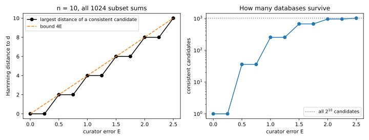
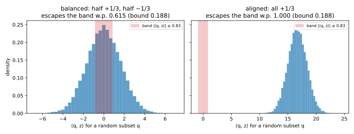
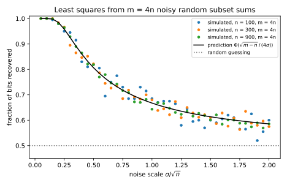

17 Reconstruction attacks
17.1 Why this matters
A hospital keeps one sensitive bit for each patient, recording whether that patient tested positive. It never releases the bits. It only answers counting questions such as “how many of the patients on this list tested positive?”, and to be safe it adds a little noise to every answer. Dinur and Nissim (2003) showed that this is not safe unless the noise is large. Each answer is a linear equation whose unknowns are the patients’ bits. A table of counts is therefore a system of equations, and enough equations with small enough errors determine the unknowns.
Threat models and privacy games set this up as the reconstruction game. The secret is a whole column of the dataset, and the attacker is scored by the fraction of entries it recovers. For bits that are equally likely to be 0 or 1, the baseline is one half, the score of guessing at random. That chapter showed that a single exact count barely beats this baseline. The count tells you which value is in the majority, but nothing about who holds it. This chapter shows what happens when the attacker gets many counts.
The only thing standing between the attacker and the solution is the error in the answers, and that protection can fail in two ways. The first is error that is too small. To hide a wrong guess, the error has to be as large as the amount by which that guess changes the answers. A randomly chosen question picks up each wrong bit of the guess only about half the time, like a coin flip. So when the guess is wrong on a sizable share of the people, the change behaves like a sum of coin flips. It is then about the square root of the number of people.
The second failure is too many answers. Errors that are independent from one answer to the next, and do not grow with the number of questions, are averaged away as the attacker asks more. Dwork and Roth call this the Fundamental Law of Information Recovery: overly accurate answers to too many questions destroy privacy. If you run or audit a system that answers aggregate queries, you have to check both halves of the law.
17.2 Counts are linear equations
Write the secret as a list of bits \(d = (d_1, \dots, d_n)\), one per person, where \(n\) is the number of people. A subset-sum query names a set of people and asks how many of them have bit 1. You can write the query as a vector \(q\) of zeros and ones, with a 1 for each person in the set. Its true answer is the inner product \(\langle q, d\rangle\), which adds up the bits of the people in the set. Table 17.1 shows six of the 16 possible queries about four people whose secret is \((1, 0, 1, 1)\).
| Subset | \(\{1\}\) | \(\{2\}\) | \(\{1, 2\}\) | \(\{3, 4\}\) | \(\{2, 3, 4\}\) | \(\{1, 2, 3, 4\}\) |
|---|---|---|---|---|---|---|
| Query vector \(q\) | 1000 | 0100 | 1100 | 0011 | 0111 | 1111 |
| True answer \(\langle q, d\rangle\) | 1 | 0 | 1 | 2 | 2 | 3 |
The party that holds the secret and answers the queries is called the curator. The attacker asks \(m\) queries, and they form the rows of a query matrix \(A\) with one row per query and one column per person. The true answers are then the entries of \(Ad\). The curator publishes the answers \(a = Ad + e\), where the error vector \(e\) holds one error per query. Write \(E\) for a bound on the size of every error, so that every published answer is within \(E\) of the true one.
With exact answers there is nothing to attack. In the example, the four queries about a single person reveal the four bits directly. More generally, any \(n\) queries whose vectors are linearly independent determine the secret, because Gaussian elimination solves the system. Everything interesting in this chapter is about answers with error.
Linearity also tells the attacker how to rule out a wrong guess. Suppose the attacker considers a candidate secret \(c\). On any query, the candidate’s answer differs from the true answer by the subset sum of the difference \(c - d\) over the same set. The candidate is ruled out if this gap between the two answers is larger than the curator’s error could explain. Every attack below is a way of finding such a query for every candidate that is far from the truth.
17.3 The exponential attack
Start with the strongest attacker, who may ask all \(2^n\) subset sums. How large must the curator’s error be before this attacker can no longer pin the secret down? The answer is an error that grows in proportion to \(n\), and the reason takes only a few steps.
The attacker cannot know the secret, but it can throw away every candidate that contradicts an answer. Call a candidate consistent if each of its subset sums is within \(E\) of the published answer. The true secret is always consistent, so at least one candidate survives, and the attacker outputs any consistent candidate.
The people on whom a consistent candidate \(c\) is wrong fall into two sets. One set holds the people whose bit is 1 but whom the candidate sets to 0. The other holds the people whose bit is 0 but whom the candidate sets to 1. The attacker has asked about both sets, since it asked about every set. On the first set, the true secret sums to the size of the set and the candidate sums to zero. Both sums are within \(E\) of the same published answer, so they are within \(2E\) of each other, and the set holds at most \(2E\) people. The same argument limits the second set to \(2E\) people. The number of bits on which \(c\) and \(d\) differ is called their Hamming distance, and it therefore satisfies \[\mathrm{dist}(c, d) \le 4E. \tag{17.1}\]
The bound is tight. Flip about \(2E\) of the secret’s ones to zeros and as many zeros to ones. Within any set, the flips to zero lower the candidate’s sum and the flips to one raise it. They partly cancel, so the two sums differ by at most \(2E\). A curator that answers halfway between them is within \(E\) of both and keeps the candidate. It is wrong on \(4E\) bits when \(2E\) is a whole number and the secret has enough ones and zeros to flip.
The argument assumes nothing about how the curator picks its errors except that each is at most \(E\). The errors may be chosen by an adversary, even one that has seen the attacker’s candidate. By Equation 17.1, a curator whose error is a smaller and smaller fraction of \(n\) as \(n\) grows lets the attacker recover all but a vanishing fraction of the bits. Dinur and Nissim call such a curator blatantly non-private. For example, take a million people with every answer off by up to 1000. The attacker then gets at most 4,000 bits wrong, only 0.4% of them.
The bound is a worst case over curators, so a particular curator can leak far more than it suggests. A curator that rounds every answer to a multiple of 4 has error at most 2, but the rounding is a known function of the true sum. An attacker who applies the same rounding to each candidate’s sums therefore recovers the secret exactly. A distortion that the attacker can simulate is not noise.
The proof uses only two queries, the two sets of wrong bits. The attacker does not know these sets in advance, because it does not know which bits it got wrong, and that is why it needs every answer. It also has to check \(2^n\) candidates against \(2^n\) answers, so the attack is far too slow to run on real data.
Table 17.2 runs the attack on ten people whose secret has four ones, checking all 1024 candidates against all 1024 subset sums. It counts, for each error, the candidates that some curator with that error can make consistent, and finds the farthest of them from the secret.
| Error \(E\) | 0 | 0.5 | 1 | 1.5 | 2 |
|---|---|---|---|---|---|
| Candidates that survive | 1 | 35 | 242 | 630 | 912 |
| Largest distance to \(d\) | 0 | 2 | 4 | 6 | 8 |
| Bound \(4E\) | 0 | 2 | 4 | 6 | 8 |
The farthest survivor sits exactly at the bound for every error, as the tightness argument predicts. At the largest error, 912 of the 1024 candidates survive. There, a guarantee of at most 8 wrong bits out of 10 says almost nothing. Figure 17.1 shows the same over a finer range of errors, for another random secret.

17.4 The linear-programming decoder
Asking \(2^n\) questions is not realistic. Dinur and Nissim showed that a number of random queries only slightly larger than \(n\) is enough, with a decoder that runs in polynomial time. Each random query includes each person independently with probability one half. Their proof asks for \(n(\log n)^2\) queries, and the version in the full edition needs a constant times \(n\log n\).
The decoder makes the search easier by allowing fractions. Instead of checking every list of bits, it lets each unknown be any number between 0 and 1. It then looks for a vector whose answers are all within \(E\) of the published answers. This search is a linear program, a problem of finding a point that satisfies a list of linear inequalities. Each requirement that an answer be within \(E\) is a pair of such inequalities. Linear programs can be solved in time polynomial in the number of unknowns and inequalities. The true secret meets every requirement, so a solution exists, and the decoder rounds each entry of it to the nearest bit.
The price of using random queries is that the curator’s error must now be smaller, well below \(\sqrt n\) instead of well below \(n\). The reason is that a random query cannot aim at the wrong bits. Suppose a candidate differs from the secret on \(k\) bits. A query aimed at exactly those bits, which the exponential attacker could ask, would move the answer by \(k\). A random query picks up each of those bits with probability one half, so its sum over them behaves like a sum of \(k\) coin flips. Such a sum fluctuates by about \(\sqrt k\), not by \(k\). A consistent candidate’s answers differ from the true answers by at most \(2E\) on every query, so an error well below \(\sqrt k\) cannot hide that fluctuation. When the candidate is wrong on a fixed share of the bits, \(\sqrt k\) grows like \(\sqrt n\).
The proof has to show that this fluctuation really happens with a decent probability, whatever the signs of the differences. A random query catches a bad candidate only when the subset sum of the difference is far from zero. So the proof needs a lower bound on how often a quantity is large. Markov’s inequality (Concentration inequalities) gives the opposite, an upper bound: a quantity that cannot be negative is rarely far above its mean.
A lower bound cannot hold for every quantity. One that is 0 most of the time and huge once in a while has a large mean, and it is still usually 0. What rules this out is a second moment, the average of the square, that is not much larger than the squared mean. A rare huge value would make the average square enormous.
The Paley–Zygmund inequality makes this precise. Like Markov’s inequality, it applies only to a quantity \(W\) that cannot be negative, and it needs a finite second moment so that the right side below is defined. Without the first condition, being above a fraction of the mean would not mean being away from zero. A subset sum whose terms cancel can have a mean of zero and still be large in either direction. That is why the attack applies the inequality to the square of the sum. For any fraction \(\theta\) from 0 up to (but not including) 1, the inequality says that \[\Pr\big[W > \theta\,\mathbb E W\big] \ge (1 - \theta)^2\frac{(\mathbb E W)^2}{\mathbb E[W^2]}. \tag{17.2}\] The right side is large when the average square is close to the squared mean, which is exactly the case where \(W\) cannot hide its mass in rare spikes. A lower bound like this, on how often a quantity stays away from zero, is called anti-concentration.
The attack takes \(W\) to be the square of a random subset sum, so the average of \(W^2\) is the average fourth power of the sum. The inequality is useful when that fourth moment is not much larger than the squared second moment. A random subset sum passes this test, because it is built from independent fair coins and has no heavy tails. Its fourth moment is at most 3 times the square of its second moment, the same ratio as for a normal distribution.
Putting these facts together gives the lemma the decoder rests on. Think of a vector \(z\) as the difference between a bad candidate and the secret. Write \(\beta\) for a fraction of wrong bits, not a failure probability as in the concentration chapter. Suppose \(z\) has at least \(\beta n\) entries of size at least one third. That is less than the one half by which a wrong bit differs, because the proof leaves room for a rounding step described below. Then a random subset sum of \(z\) lands far from zero with at least a constant probability, whatever the signs of the entries: \[\Pr\left[|\langle q, z\rangle| > \frac{\sqrt{\beta n}}{12}\right] \ge \frac{3}{16}. \tag{17.3}\] Here “far” is measured on the scale \(\sqrt{\beta n}\), the square root of the number of large entries, as the coin-flip picture predicts.
The hard case is a difference whose entries cancel. If all the large entries of \(z\) have the same sign, a random subset sum has a large average and escapes any small band around zero almost always. If half are positive and half negative, the sum is centred at zero, and only its fluctuation can carry it out of the band. The lemma covers both cases, because its proof ignores the average and relies on the fluctuation alone. Figure 17.2 shows both cases for the band of half-width \(\sqrt{\beta n}/12\) from Equation 17.3. In the figure’s example, a random sum escapes the band about 62% of the time even in the balanced case, far above the lemma’s guarantee of 0.1875.

The theorem turns the lemma into a guarantee for the decoder. A query catches a bad candidate when the candidate’s answer differs from the true one by more than the error can explain. The theorem’s condition on \(E\) below makes every gap beyond the lemma’s threshold such a catch. So each query catches a bad candidate with probability at least \(\frac{3}{16}\). The queries are independent, so the candidate escapes all \(m\) of them with probability at most \((13/16)^m\), which shrinks exponentially as \(m\) grows.
The proof also has to handle the infinitely many points the program can return, because the union bound needs a finite list. It rounds them to a grid of at most \((n + 1)^n\) points. The union bound (Concentration inequalities) over that grid then sets the number of queries below.
Theorem (Dinur–Nissim, in the form the full edition proves). Fix the secret, a fraction \(\beta\) of wrong bits and a failure probability \(\eta\). Suppose that the curator’s error \(E\) satisfies \(2E + \frac12 \le \sqrt{\beta n}/12\), and that the number of independent random queries satisfies \[m \ge \frac{n\ln(n + 1) + \ln(1/\eta)}{\ln(16/13)}. \tag{17.4}\] Then, with probability at least \(1 - \eta\) over the queries, every solution of the linear program rounds to a vector with at most \(\beta n\) wrong bits, whatever errors the curator chose.
The condition on the error is the lemma’s threshold with room for two things. A consistent candidate and the secret are each within \(E\) of every answer, so their sums can differ by up to \(2E\). Rounding to the grid adds up to \(\frac12\) more. The guarantee holds for every curator at once, because whether a bad grid point escapes depends only on the queries, not on the errors. If the error grows more slowly than \(\sqrt n\), the condition holds for smaller and smaller \(\beta\) as \(n\) grows. In words, the attacker then recovers all but a vanishing fraction of the bits in polynomial time, from a number of random queries of order \(n\log n\).
The proved constants are poor, but the scaling is right. Take a thousand people and a target of 10% wrong bits. The theorem then tolerates an error of only 0.1667. For a failure probability of 0.01 it asks for at least 33,296 queries. That is about 33 per person, and the count per person grows with \(n\) because of the factor \(\ln(n + 1)\), which the union bound over the grid adds. Sharper analyses need only a number of queries proportional to \(n\). In practice, the least-squares decoder of the next section already works at errors of about \(0.2\sqrt n\) with \(4n\) queries. So don’t read the proved constants as a safety margin.
Two further results show that the attack does not depend on the assumptions of the proof. Requiring every answer to be within \(E\) fails if a single answer is wildly wrong. Dwork, McSherry and Talwar (2007) studied a variant that instead minimises the total absolute difference between the candidate’s answers and the published ones. It tolerates a constant fraction of answers with arbitrarily large errors. Random queries are not essential either, since Dinur and Nissim used them only to make the proof work. Real attacks use whatever queries a system answers. Cohen and Nissim (2020) ran a linear-programming reconstruction against a commercial query system that added noise to its answers, and recovered most of a secret column.
17.5 Least squares under worst-case and random error
The linear program needs a solver and a value of \(E\). A simpler decoder needs neither. Least squares picks the vector whose answers come closest to the published answers, measured by the sum of squared differences. Write \(\hat x\) for this estimate of the secret. It has a closed form, \[\hat x = (A^\top A)^{-1}A^\top a, \tag{17.5}\] and the decoder clips each entry to the range from 0 to 1 and then rounds it. The decoded vector is a linear function of the answers. Its error is therefore a linear function of the curator’s error, and you can analyse it exactly in two cases. In the first, an adversary chooses the errors. In the second, the errors are independent random noise.
How much least squares amplifies the curator’s error depends on how much the query matrix can shrink a vector. The smallest singular value \(s_{\min}(A)\) is the smallest length that \(A\) gives to a vector of length 1. It measures the direction that the queries see least clearly. The analysis assumes at least as many queries as people, and a query matrix whose columns are linearly independent, so that \(s_{\min}(A)\) is positive. Without this, some change to the secret would leave every answer unchanged, and no decoder could detect it.
Consider first errors chosen by an adversary. The closed form maps the error vector to the decoder’s error, and this map can stretch a vector by at most a factor \(1/s_{\min}(A)\). So the decoded vector is never farther from the secret than the length of the error vector times that factor. Clipping only moves an entry closer to its true bit, so it cannot make this worse. Each wrong bit is off by at least \(\frac12\), so it adds at least \(\frac14\) to the squared distance. If every error is at most \(E\), the squared length of the error vector is at most \(mE^2\), and the decoder gets at most \[\frac{4mE^2}{s_{\min}(A)^2} \tag{17.6}\] bits wrong.
For random subset queries, the theory of random matrices gives the approximation \[s_{\min}(A) \approx \tfrac12\big(\sqrt m - \sqrt n\big). \tag{17.7}\] With four times as many queries as people, this is about half of \(\sqrt n\), so its square is about \(m/16\) and the bound becomes about \(64E^2\). An error well below \(\sqrt n\) therefore leaves only a small fraction of the bits wrong, with only \(4n\) queries.
Now let the curator’s errors be independent normal draws with mean 0, and write \(\sigma\) for their standard deviation. Each entry of the decoder’s error is then normal too, with a variance of about \(4\sigma^2/(m - n)\). In words, the variance of the noise is divided by the number of equations beyond the \(n\) needed to determine the secret, because those extra equations average the noise down. The factor 4 appears because a random query includes each person only half the time.
The count is \(m - n\) rather than \(m\) because the inverse of a randomly fluctuating matrix is, on average, larger than the inverse of its average. The correction is exact for query rows drawn from a normal distribution. The rows here are zeros and ones, so the formula is only an approximation, which the simulations below check.
A bit comes out wrong when its error pushes it across \(\frac12\). Write \(\Phi\) for the standard normal cumulative distribution function, so \(\Phi(t)\) is the probability that a standard normal draw is below \(t\). The expected fraction of bits that least squares recovers is then approximately \[\Phi\left(\frac{\sqrt{m - n}}{4\sigma}\right). \tag{17.8}\] The argument of \(\Phi\) is the distance \(\frac12\) to the wrong side, measured in units of the error’s standard deviation \(2\sigma/\sqrt{m - n}\).
Two consequences follow. The first is that only the ratio \(\sigma/\sqrt n\) matters when the number of queries is a fixed multiple of \(n\). Plotted against that ratio, the recovery curves for different numbers of people fall on top of each other (Figure 17.3), so \(\sqrt n\) is again the scale of the threat. But noise of that order is not automatically safe. With four queries per person and noise of a quarter of \(\sqrt n\), least squares recovers about 96% of the bits. Recovery degrades smoothly as the noise grows, and it does not switch off at a threshold.

The second consequence is that more queries average independent noise away. At a fixed noise level, the predicted fraction tends to 1 as the number of queries grows. To hold the attack at a fixed accuracy, the noise must grow like \(\sqrt m\) (Figure 17.4). This is the second half of the Fundamental Law. A bound on the error of each answer is not enough when the number of answers is unbounded.

Table 17.3 checks the prediction on 500 people with 2000 queries, averaged over four random secrets and query matrices. The prediction is within 0.013 of every simulated value.
| \(\sigma/\sqrt n\) | 0.1 | 0.25 | 0.5 | 1 | 2 |
|---|---|---|---|---|---|
| \(\sigma\) | 2.24 | 5.59 | 11.18 | 22.36 | 44.72 |
| Recovered, simulated | 1.0000 | 0.9655 | 0.8130 | 0.6550 | 0.5875 |
| Recovered, Equation 17.8 | 1.0000 | 0.9585 | 0.8069 | 0.6676 | 0.5858 |
The last column shows how a curator can look safe and still fail. With noise of twice \(\sqrt n\) and four queries per person, least squares recovers only 0.5875 of the bits. But suppose the same curator answers any number of queries at the same noise level. Solving Equation 17.8 for the number of queries, an attacker who asks \(m = 106.1n\) queries is predicted to recover 90% of the bits.
Errors chosen by an adversary hurt more than random errors of the same size. Least squares amplifies errors most along one direction of the secret’s space, the one belonging to the smallest singular value. Independent normal noise points in all directions equally, so only a small part of it falls along that direction. A worst-direction curator gives every answer an error of the full size \(E\). It chooses the signs so that least squares turns them into the largest possible error along that direction. Table 17.4 runs such a curator in the setting of Table 17.3, where the measured smallest singular value is 11.43, close to the approximation’s 11.18.
| Error \(E\) | 1 | 2 | \(0.25\sqrt n = 5.59\) |
|---|---|---|---|
| Bound Equation 17.6 on wrong bits | 61.2 | 245.0 | 1914.0 |
| Wrong bits caused by the worst-direction curator | 0 | 20 | 143 |
At the largest error, the bound exceeds the number of people and says nothing. The worst-direction curator causes 143 wrong bits there. Normal noise with the same standard deviation causes about 17, the share of 500 bits that Table 17.3 shows least squares missing. The bound is loose by more than a factor of 10, but it is the only statement that holds for every curator. So when a system’s errors are not independent random noise, test it with errors chosen against the decoder, not only with normal noise of the same size.
17.6 The Fundamental Law of Information Recovery
The attacks so far say when answers are too accurate. Two questions remain. Is an error of order \(\sqrt n\) really enough to stop reconstruction, or is it just where the proofs stop? And how many queries does any attack need? This section answers both.
To show that an error of order \(\sqrt n\) can stop reconstruction, you need a curator whose errors are that small yet hide many bits completely. A sampling curator does this. It fixes a sampling probability \(p\) and draws a secret sample of the people, keeping each person independently with that probability. It answers every query from the people in the sample only, and divides by \(p\) so that each answer is correct on average. The error of one answer is then a sum of independent terms with mean zero, one per person, so it is of order \(\sqrt n\). Hoeffding’s inequality (Concentration inequalities) bounds that error for one query, and the union bound extends it to all \(m\) queries at once. With probability at least \(1 - \eta\), every answer has error at most \[\sqrt{\frac{n\ln(2m/\eta)}{2p^2}}. \tag{17.9}\]
People outside the sample never affect any answer, so the answers reveal nothing about their bits. Suppose the secret bits are uniformly random. To the attacker, the bit of a person outside the sample is then a fair coin, and any guess about it is right half the time. At best the attacker gets everyone in the sample right. The expected fraction it recovers is therefore at most \(p + \frac{1 - p}{2}\), which is three quarters when \(p = \frac12\).
This curator shows that an error of order \(\sqrt n\) can be enough. The full edition’s script runs it in the setting of Table 17.3, keeping each person with probability one half, and it keeps 250 people. The largest error over all the queries is 28.00, or \(1.25\sqrt n\). The Hoeffding bound Equation 17.9 at \(\eta = 0.05\) is 106.25, which is loose because it assumes the widest spread each term could have. Least squares on these answers recovers 0.7560 of the bits, right at the ceiling of three quarters. The sampling curator’s error is only a logarithmic factor above the error the attacks need. So an error of order \(\sqrt n\) is necessary to stop reconstruction, and it can be enough.
But stopping reconstruction is not privacy. The same curator’s answers are exact sums over its sample, scaled up by \(1/p\). An attacker with enough queries therefore learns every sampled person’s bit, because least squares recovers each such bit divided by \(p\). Half the people are fully exposed so that the other half can be fully hidden. Stopping blatant reconstruction is a much weaker goal than protecting everyone. The definition of differential privacy gives a guarantee that holds for every individual.
The sampling curator also shows why the source of the errors matters, not just their size. Compare it with a curator that adds an independent random error of the same size to each answer. That curator is not as safe. Its errors are independent across queries, so least squares averages them away as the attacker asks more. The sampling curator’s errors all come from one secret sample, shared by every answer, so asking more never reveals the people left out.
How few queries can any attack use? To answer, count bits of information, with the tools of Information theory. Suppose the secret is \(n\) uniformly random bits, so that it carries \(n\) bits of information. Write \(V\) for the largest number of different values that one answer can take, which is \(n + 1\) for exact counts of up to \(n\) people. An answer with that many values carries at most \(\log_2V\) bits, so the \(m\) answers together carry at most \(m\log_2V\) bits. The argument treats the queries as fixed in advance, so that only the answers carry information about the secret.
A guess that is wrong on some bits still leaves the attacker uncertain about the secret. The binary entropy \(h(\beta) = -\beta\log_2\beta - (1 - \beta)\log_2(1 - \beta)\) is the uncertainty, in bits, of a coin that comes up heads with probability \(\beta\). Fano’s inequality says how much a good guess can leave unknown. A guess that is wrong on an expected fraction \(\beta\) of the bits, with \(\beta\) at most one half, leaves at most \(n\,h(\beta)\) bits of uncertainty about the secret. The secret carries \(n\) bits, so the guess must carry the rest, at least \(n(1 - h(\beta))\) bits. The data processing inequality says that a guess computed from the answers cannot carry more information about the secret than the answers themselves. Combining the two counts, any attack needs at least \[m \ge \frac{n\,(1 - h(\beta))}{\log_2V} \tag{17.10}\] queries.
Take a thousand people and allow 5% wrong bits. The binary entropy of that fraction is 0.2864, so the answers must still supply 0.7136 bits per person. An exact count takes one of 1001 values, so it carries at most about 9.97 bits. Dividing one by the other, the bound asks for at least 71.6 queries. Coarser answers take fewer values and carry fewer bits each, so they raise the floor. Rounding every count to a multiple of 10 leaves about a hundred values and raises the floor to 106.9 queries. Rounding to multiples of 32 raises it to 141.5. These floors hold for any attack, whatever its running time. They are not a defence, though, because an attacker can simply ask more queries.
The bound also shows that the attacks use nearly as few queries as possible. With exact counts, the bound grows like \(n/\log n\), while least squares with exact answers uses \(n\) queries, only a logarithmic factor more. The bound needs answers that take finitely many values, because a real-valued answer could carry unlimited information in its low-order digits. Any published table has finite precision, so the condition holds in practice.
So a defence must control both halves of the law, the error scale and the number of answers. That is why the privacy definition of Part 3 tracks a budget spent across all the queries.
17.7 Reconstructing a census block
National statistical offices publish many tables computed from the same confidential records. A table might give counts by age, sex and race for every block, or the same counts by household type, or medians and means. Each table cell is a query. Garfinkel, Abowd and Martindale (2019) built a toy block of seven people. They showed that a modest set of published statistics can determine every person’s age, sex, race and marital status, and that a constraint solver finds the solution in seconds. The full edition repeats this experiment with a block of its own, as a reconstruction game whose queries are the published tables.
The fictional block has seven people. Each person has a sex, a race that is Black or White, a marital status, and an age in whole years from 0 to 99. Nobody under 18 is married. Table 17.5 is everything the agency publishes about the block. The means are given to two decimals, which is enough to recover the sum of ages in each group exactly. A sum of ages is a whole number, and \(34.29 \times 7 = 240.03\), so the seven ages total 240.
| Group | Count | Median age | Mean age |
|---|---|---|---|
| Total | 7 | 33 | 34.29 |
| Female | 4 | 31 | 30.25 |
| Male | 3 | 33 | 39.67 |
| Black | 4 | 33.5 | 36.25 |
| White | 3 | 33 | 31.67 |
| Married | 4 | 43.5 | 47.75 |
The decoder lists candidate blocks and discards those that contradict a published number. The women’s and men’s medians and means leave 14,790 candidate age vectors, and the overall median keeps 12,906 of them. Each of these already splits into four women and three men, because it was built from their lists. The decoder then tests the other two splits separately. Only 387 vectors can be split into Black and White people who match the race statistics. Only 33 can be split into married and single people who match the marital statistics. Exactly one vector passes both tests, its splits are unique, and it is the true block (Table 17.6).
| Person | 1 | 2 | 3 | 4 | 5 | 6 | 7 |
|---|---|---|---|---|---|---|---|
| Age | 7 | 15 | 27 | 33 | 35 | 52 | 71 |
| Sex | F | M | F | M | F | F | M |
| Race | B | B | W | W | W | B | B |
| Married | no | no | no | yes | yes | yes | yes |
In total, eighteen published numbers determine the age, sex, race and marital status of all seven people.
Withholding one number rarely helps. Figure 17.5 repeats the search with each of the twelve medians and means withheld in turn. Eight of the twelve leave the block uniquely determined, because the remaining statistics either imply the missing one or pin the block down without it. The female mean, for example, adds nothing, since the total and male sums imply it.

Withholding the married mean hurts the attacker most, because it is the only statistic about the single people’s ages. Without it, neither the married sum nor the single sum, which is the total minus the married sum, is known. Even so, only 45 blocks remain, and 51% of them have the true sex, race and marital pattern of all seven people.
Real publications are more exposed than this toy, not less, because their tables overlap. They cross-classify many variables at many geographic levels, so the same people appear in thousands of cells. That is exactly the “too many questions” half of the Fundamental Law. The usual protections also leave most constraints exact. The main protection of the 2010 Census swapped a small fraction of households between blocks, which changes some answers and leaves the rest exact. Coarsening ages into bands and suppressing small cells, common in other tables, have the same weakness. They remove some constraints, and the remaining ones still hold exactly.
The attack also works at full scale. Abowd (2021) described the Census Bureau’s own reconstruction of the 2010 Census. It rebuilt a record for each of the 308,745,538 people counted. Each record gave a block, sex, age, race and ethnicity, and about 46% of them matched a real person exactly on all five fields. Linking them to commercial data confirmed the identity of about 17% of the population. The Bureau responded by moving the 2020 Census to a method based on the privacy definition of Part 3.
17.8 Code
To audit a query system or plan a release, three numbers come first. You want the fraction of bits that least squares would recover at your noise level, and how many queries per person push that fraction to a target. You also want the fewest queries any attack needs, and the snippet below computes all three. It uses the finite-sample variance \(4\sigma^2 n/((n + 1)(m - n - 1))\) from the full edition’s derivation, which is about \(4\sigma^2/(m - n)\).
from math import log2, sqrt
from statistics import NormalDist
PHI = NormalDist()
def ls_recovered(n: int, m: int, sigma: float) -> float:
"""Predicted fraction of n secret bits that least squares recovers from m noisy random subset sums."""
sd = 2 * sigma * sqrt(n / ((n + 1) * (m - n - 1))) # spread of each decoded bit's error
return PHI.cdf(0.5 / sd) # a bit comes out wrong when its error crosses 1/2
def queries_per_person(target: float, sigma_over_sqrt_n: float) -> float:
"""m/n at which least squares recovers a fraction `target` of the bits, for noise sigma = c * sqrt(n)."""
return 1 + (4 * sigma_over_sqrt_n * PHI.inv_cdf(target)) ** 2
def binary_entropy(p: float) -> float:
return -p * log2(p) - (1 - p) * log2(1 - p)
def min_queries(n: int, wrong: float, values: int) -> float:
"""Fewest answers, each taking at most `values` values, from which any attack gets all but n * wrong bits."""
return n * (1 - binary_entropy(wrong)) / log2(values)
n, m = 500, 2000
print(" ".join(f"{ls_recovered(n, m, c * sqrt(n)):.4f}" for c in (0.1, 0.25, 0.5, 1, 2))) # 1.0000 0.9585 0.8069 0.6676 0.5858
print(f"{queries_per_person(0.9, 2.0):.1f}") # 106.1
print(f"{min_queries(1000, 0.05, 1001):.1f}") # 71.6
print(f"{min_queries(1000, 0.05, 1000 // 10 + 2):.1f}") # 106.9
print(f"{min_queries(1000, 0.05, 1000 // 32 + 2):.1f}") # 141.5The first line is the prediction row of Table 17.3. The last two lines count the values of an answer rounded to multiples of a width \(w\) as \(\lfloor n/w\rfloor + 2\), as the full edition’s script does. This may count one value too many, which only lowers the bound, so the floor stays valid. The full edition’s script, reconstruction.py, runs the attacks themselves.
uv run python code/part02-attacks/reconstruction.py17.9 Cheat sheet
| Setting | Result | Notes |
|---|---|---|
| All \(2^n\) subset sums, error at most \(E\) | Any consistent candidate has at most \(4E\) wrong bits | Tight; holds for every curator |
| Paley–Zygmund | \(\Pr[W > \theta\,\mathbb E W] \ge (1 - \theta)^2(\mathbb E W)^2/\mathbb E[W^2]\) for \(W \ge 0\) | A random subset sum is not concentrated near 0 |
| One random query | \(\beta n\) entries of \(z\) at least \(\frac13\): \(\Pr[\lvert\langle q, z\rangle\rvert > \sqrt{\beta n}/12] \ge \frac3{16}\) | Holds whatever the signs |
| Linear-programming decoder | \(2E + \frac12 \le \sqrt{\beta n}/12\) and \(m \ge \frac{n\ln(n+1) + \ln(1/\eta)}{\ln(16/13)}\): at most \(\beta n\) wrong bits | With probability \(1 - \eta\) over random queries; constants pessimistic |
| Least squares, worst-case error | Wrong bits at most \(4mE^2/s_{\min}(A)^2 \approx 64E^2\) for \(4n\) random subsets | Adversarial errors hurt more than random ones |
| Least squares, normal noise \(\sigma\) | Fraction recovered \(\approx \Phi(\sqrt{m - n}/(4\sigma))\) | Noise must grow like \(\sqrt m\) to hold it fixed |
| Sampling curator | Error at most \(\sqrt{n\ln(2m/\eta)/(2p^2)}\); recovery at most \(p + \frac{1 - p}2\) | Stops reconstruction, exposes the sampled people |
| Information bound | \(m \ge n(1 - h(\beta))/\log_2V\) | Exact counts: of order \(n/\log n\) queries |
| Published tables | Each cell is a constraint | Swapping, coarsening and suppression leave most constraints exact |
Rules of thumb
- The threat scale of a random subset-sum query is \(\sqrt n\), and of the worst query \(n\). Errors well below that scale reveal the database.
- Independent noise per answer is averaged away by more answers. Budget the error over all answers, not per answer.
- Rounding, swapping and suppression are not noise, because an attacker can simulate them or work around them.
- Stopping reconstruction is not privacy. Ask what the system guarantees for each individual.
17.10 Further reading
- Dinur & Nissim, “Revealing Information while Preserving Privacy” (PODS 2003): the original attacks and the notion of blatant non-privacy.
- Dwork & Roth, The Algorithmic Foundations of Differential Privacy (2014), ch. 8: the reconstruction attacks as lower bounds, and the Fundamental Law of Information Recovery.
- Dwork, Smith, Steinke & Ullman, “Exposed! A Survey of Attacks on Private Data” (Annual Review of Statistics and Its Application, 2017): a readable survey of reconstruction and tracing attacks.
- Garfinkel, Abowd & Martindale, “Understanding Database Reconstruction Attacks on Public Data” (CACM 2019): the seven-person block reconstructed with a solver.
Derivations. Every result in this chapter is derived step by step in the full edition’s chapter, except these, which it cites: the size of the smallest singular value of a random query matrix, the finite-sample correction to the least-squares variance (exact for normal query rows, an approximation checked by simulation in the full edition), Dinur and Nissim’s original proof with \(n(\log n)^2\) queries, the sharper analyses with a number of queries proportional to \(n\), the decoder of Dwork, McSherry and Talwar, the solver experiment of Garfinkel, Abowd and Martindale, the description of the 2010 Census swapping, and the reported attacks of Cohen and Nissim and of the Census Bureau.